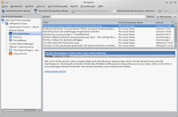
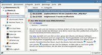
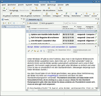
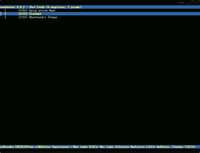
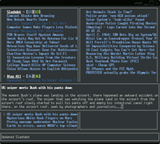

Feedreader
Zum Verständnis dieses Artikels sind folgende Seiten hilfreich:
Als Feedreader ("Einspeisungsleser" oder "Eingabeleser"), auch als RSS-Reader ("RSS-Leser") oder Aggregator ("Sammler") werden Computerprogramme bezeichnet, mit denen sich so genannte Newsfeeds einlesen und anzeigen lassen können.
Newsfeeds werden meist von den Betreibern von Nachrichtenseiten, Weblogs und Foren angeboten, um über neue Artikel und Beiträge auf dieser Website zu informieren. So kann der Besucher, auch ohne die Website explizit aufzusuchen, erkennen, ob für ihn interessante Beiträge vorliegen.
Die am weitesten verbreiteten Feed-Formate sind das RSS- bzw. das neuere Atom-Format. Teilweise sind solche Programme bereits im Web-Browser oder im E-Mail-Programm integriert, teilweise werden aber auch externe Programme zum Lesen und Verwalten von Feeds verwendet. Mit Feedreadern können keine Feeds bearbeitet oder erstellt werden.
Eigenständige Programme¶
Mit grafischer Oberfläche¶
|  |
| Akregator |
Akregator¶
Akregator ist der als Standard installierte Feedreader der KDE-Desktopumgebung und wird bei der Installation von Kubuntu mitinstalliert. Als Alternative zum Start als eigenes Programm bindet sich Akregator automatisch in der Groupware Kontact unter "Nachrichten" ein. So findet man seine Newsfeeds an einer zentralen Stelle im System. Das Programm ist in den Grundfunktionen sehr einfach zu bedienen. Newsfeeds lassen sich unter "Nachrichtenquellen" hinzufügen, entfernen und organisieren. Ein Icon in der Traybar mit der Anzahl der ungelesenen Nachrichten zeigt Akregator automatisch an.
Liferea¶
|  |
| Liferea |
Liferea ist ein äußerst komfortabler Feedreader. Er ist einfach zu bedienen und übersichtlich gestaltet, so dass die Benutzung recht intuitiv vonstatten geht. Nach dem Start aus dem GNOME-Menü unter "Anwendungen -> Internet -> Liferea Feed Reader", lassen sich per Rechtsklick in der Übersicht einzelne Ordner erstellen, falls man die Feeds nach Kategorien ordnen möchte. Mit der Schaltfläche "Abonnement hinzufügen" lässt sich ein neuer Feed erstellen. Mit einem Rechtsklick auf einen Feed und "Löschen" kann man selbigen wieder entfernen. In den Einstellungen sollte man das Intervall eingeben, nach welcher Zeit die Feeds aktualisiert werden. Liferea unterstützt auch Quellen wie Bloglines  .
.
Außerdem lassen sich noch zahlreiche weitere Veränderungen vornehmen und mit Hilfe von Skripten sogar Events für das Eintreffen von bestimmten Feeds festlegen. Liferea minimiert sich zur Trayleiste und meldet sich von da aus, wenn neue Feeds eingetroffen sind.
PenguinTV¶
PenguinTV ist besonders darauf ausgelegt, Multimediainhalte, also Newsfeeds mit Audio- und Videoanhängen, wiederzugeben. Für die Wiedergabe werden die im System eingestellten Standardanwendungen verwendet, wodurch das Programm selbst sehr klein ist und sich auf das Wesentliche, die Verwaltung der Abonnements und dazugehörigen Dateien, konzentriert.
YARSSR¶
YARSSR (Yet Another RSS Reader) ist ein schlanker und praxisbezogener Feedreader. Das Programm wurde in Perl geschrieben und beschränkt sich auf ein Symbol im Benachrichtigungsfeld des GNOME 2 Panels. Es ist genau das richtige für Benutzer, die einen separaten Feedreader ohne Schnick-Schnack suchen.
RSSOwl¶
|  |
| RSSOwl |
RSSOwl ist ein freier und mächtiger Feedreader, der auf Java basiert. Das heißt, dass zunächst Java installiert werden muss. Dadurch ist RSSOwl plattformunabhängig und auch für Windows und Mac OS X verfügbar.
RSSOwl bietet unter anderem folgende Funktionen:
Multiple Tabs
/ Registerkarteneinen integrierten Browser
Gruppen, Attribute und Tags
Archivierung von Neuigkeiten
die Möglichkeit, Inhalte zu teilen (Facebook, Twitter, Email und viele andere Webdienste)
eine mächtige integrierte Suche
Filter
Assistent zum Importieren und Exportieren
Benachrichtigungen
Authentifizierung für Feeds (BASIC, DIGEST und NTLM)
Unterstützung für Newsgroups
Da das Programm nicht in den Paketquellen enthalten ist, muss man RSSOwl aus externen Quellen installieren. Dazu lädt man sich entweder eine Archivdatei von der Downloadseite des Projektes herunter, die noch entpackt werden muss.
Hinweis!
Fremdsoftware kann das System gefährden.
Kommandozeilen-Programme¶
Canto¶
Canto ist ein leichtgewichtiger Feedreader für die Kommandozeile bzw. Konsole. Das Programm ist der Nachfolger von NRSS (siehe unten) und wurde wie dieses von Jack Miller geschrieben.
newsbeuter¶
|  |
| newsbeuter |
newsbeuter ist ein RSS-Feedreader für die Kommandozeile, der auf allen unixartigen Betriebssystemen wie Linux, BSD oder Mac OS X läuft.
Er unterstützt Filter, das Setzen von Tags und Flags, das Abrufen von Newsfeeds über einen Proxy-Server, Ruby-Support, Podcasts, den Abgleich mit Bloglines und OMPL-Abonements und vieles mehr.
Was ihn ebenfalls auszeichnet, ist, dass newsbeuter sich durch sehr viele Optionen den eigenen Wünschen anpassen lässt. Es können eigene Tastenbelegungen definiert werden, das Aussehen lässt sich von der Farbe bis zur Formatierung der Darstellung ändern, und es können noch viele andere Kleinigkeiten vom Nutzer festgelegt werden.
NRSS¶
|  |
| NRSS |
NRSS ist ein RSS-Feedreader für die Kommandozeile. Er unterstützt sowohl das RSS- als auch das ATOM-Format.
Das hervorstechendste Merkmal ist das Aussehen. NRSS versucht, auf einem einzigen Bildschirm so viele Informationen wie möglich zur Verfügung zu stellen, ohne überladen zu wirken. Er hebt sich dabei in der Art der Darstellung der Feeds und der Inhalte teils erheblich von anderen textbasierten Feedreadern ab.
Alternativen mit RSS-Funktionen¶
Viele Programme können neben ihrer eigentlichen Funktion auch Newsfeeds darstellen. So können beispielsweise viele E-Mail Programme auch Feeds anzeigen. Diese Möglichkeiten, Feeds zu lesen, setzen natürlich die vorherige Installation des jeweiligen Programms voraus. Zusätzliche Pakete, die installiert werden müssen, sind angegeben.
Firefox¶
Ohne dass man irgendetwas dazu tun müsste, zeigt Firefox auf Seiten, die einen Feed anbieten, bereits in der URL-Leiste das Feedsymbol an. Klickt man nun darauf, wird gefragt, ob der Feed abonniert werden soll. Bestätigt man dies mit "Ja", wird der Feed in der Lesezeichenleiste angezeigt.
Mit einem Mausklick darauf sieht man dann alle Artikel des Feeds, allerdings nur deren Namen und nicht deren Inhalt, obwohl die meisten Feeds mindestens eine Vorschau zu ihrem Inhalt mit übertragen. Nachteil dieser Methode ist, dass man die Feeds nicht per Hand nachladen lassen kann, was vor allem in Verbindung mit einem Proxy wie Tor dazu führt, dass die Fähigkeiten des Browsers als Feedreader recht begrenzt sind.
Alternativ kann man auch einen Feedreeder wie z.B. Sage oder NewsFox als Erweiterung nachträglich installieren. Eine vollständige Übersicht gibt es auf der entsprechenden Unterseite von addons.mozilla.org .
Thunderbird¶
Auch mit Thunderbird kann man Feeds lesen. Dazu richtet man ein neues Feedreader-Konto ein und kann danach per Rechtsklick auf das Konto in der Gesamtübersicht einen Feed hinzufügen. Jetzt kann man Feeds genauso wie E-Mails in Thunderbird abrufen und lesen. Eine ausführlichere Anleitung gibt es beispielsweise auf thunderbird-mail.de  .
.
Sylpheed-Claws¶
Fast genauso wie mit Thunderbird geht es auch mit Sylpheed-Claws, außer dass hierzu folgendes Plugin noch installiert und aktiviert werden muss:
sylpheed-claws-gtk2-feeds-reader (universe)
 mit apturl
mit apturl
Paketliste zum Kopieren:
sudo apt-get install sylpheed-claws-gtk2-feeds-reader
sudo aptitude install sylpheed-claws-gtk2-feeds-reader
Eclipse RSS-Reader¶
Etwas umfangreicher - aber auch komplizierter - ist die Möglichkeit, mit Eclipse Feeds zu lesen. Dazu muss jedoch der Eclipse RSS Reader installiert werden.
Hinweis!
Fremdsoftware kann das System gefährden.
Zudem ist es auch möglich, RSSOwl in Eclipse zu integrieren. Anleitung: How do I install RSSOwl into Eclipse?
Webapplikationen¶
Neben lokal installierten Programmen gibt es eine Reihe von Webapplikationen - sogenannte Online-Newsreader. Diese Webseiten funktionieren im Endeffekt wie ein herkömmlicher Newsreader, können jedoch von jedem Rechner aus genutzt werden. So kann man vom Büro aus schnell die wichtigsten Newsfeeds durchgehen, ohne zu Hause nochmal dieselben Feeds lesen zu müssen.
Die bekanntesten Anbieter sind Feedly , NewsBlur und der kostenlose Service Netvibes . Weitere sind bei Wikipedia zu finden Wikipedia News aggregator .
Für Nutzer mit einem eigenen Webspace ist das Programm Tiny Tiny RSS gut geeignet. Voraussetzung ist ein Webspace mit PHP und einer MySQL-Datenbank. Die Anwendung ist einfach zu installieren und kann sowohl im Ein- als auch im Mehrbenutzermodus betrieben werden. Es lassen sich auch eigene neue Feeds erzeugen und gezielte Suchen definieren.
Links¶
QuiteRSS
- grafischer Feedreader auf Qt-Basis (PPA verfügbar)RSS Guard
- weiterer Feedreader auf Qt-Basis (Fremdpaket verfügbar)Internetanwendungen
 Übersichtsartikel
Übersichtsartikel
- Erstellt mit Inyoka
-
 2004 – 2017 ubuntuusers.de • Einige Rechte vorbehalten
2004 – 2017 ubuntuusers.de • Einige Rechte vorbehalten
Lizenz • Kontakt • Datenschutz • Impressum • Serverstatus -
Serverhousing gespendet von